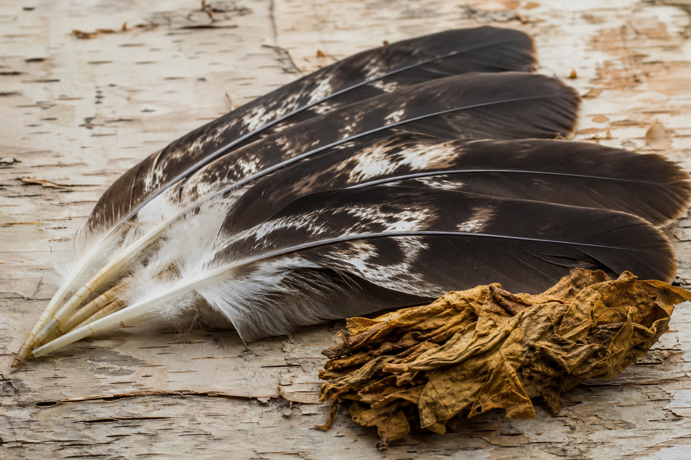

🦅 #75 — L'Aigle, Messager des Cieux
Regard perçant, plumes sacrées et pont entre la terre et le Grand Ciel chez les Premières Nations du Québec
L'aigle plane entre terre et ciel — messager des forêts et des eaux du Québec.
Haut dans le ciel du Québec, là où les courants thermiques portent les oiseaux au-dessus des forêts et des grands lacs, l'aigle plane comme un messager. Pour les Premières Nations, il n'est pas un simple rapace : c'est un intermédiaire entre le monde visible et les puissances du haut, un enseignant de vision, de courage mesuré et de respect des protocoles qui entourent chaque plume.
Longtemps avant que l'aigle devienne un emblème sur des drapeaux ou des logos, les anciens observaient sa trajectoire avec une attention silencieuse. Où il tournoie, comment il plonge, quand il choisit de monter plutôt que de frapper — autant de signes lus dans le ciel comme on lit une rivière.
Les plumes sacrées : protocole et responsabilité

Une plume d'aigle n'est pas un souvenir de chasse ni un ornement de hasard. Chez de nombreuses nations, elle est reçue, offerte ou héritée — jamais prise à la légère. Les plumes entrent dans les cérémonies, les councils, les objets de prière et les honneurs accordés à ceux qui servent la communauté.
Le protocole exige souvent du tabac sacré, une demande claire, parfois l'avis des Aînés. Garder une plume, c'est accepter de porter la parole du collectif avec intégrité : dire vrai, écouter avant de parler, ne pas utiliser un symbole sacré pour se mettre au-dessus des autres.
Vision, rêves et quêtes
L'aigle est associé à la clarté du regard — voir loin, au-delà de l'immédiat, au-delà de la colère du moment. Dans plusieurs traditions, un aigle en rêve annonce une responsabilité nouvelle, un appel à guider ou à protéger un territoire, un enfant, une décision difficile.
Les récits de quête de vision, là où ils existent encore dans le respect des protocoles communautaires, placent parfois l'aigle parmi les auxiliaires spirituels : non pour glorifier l'individu, mais pour rappeler que la connaissance exige humilité. Celui qui croit « posséder » une vision trahit ce que l'aigle enseigne.
Entre tonnerre et ciel : l'aigle et le Grand Esprit
Chez les Anishinabeg, le récit du Thunderbird (Oiseau-Tonnerre) dialogue avec la figure de l'aigle : puissance du ciel, protection du territoire, foudre qui purifie. L'aigle, lui, porte souvent un message plus silencieux — la patience du vol plané, la précision du regard avant l'action.
Cette complémentarité enseigne que la force spirituelle n'a qu'une seule forme : parfois tonnerre, parfois silence en hauteur. Les deux demandent respect, et aucun des deux ne s'improvise dans une cérémonie.
L'aigle chez les onze nations du Québec
Chaque nation possède sa propre relation à l'aigle et aux oiseaux de proie, toujours encadrée par des protocoles locaux.
- Anishinabeg (Algonquins) — L'aigle et le Thunderbird structurent des récits de protection du territoire ; les plumes accompagnent prières, pipes et honneurs communautaires.
- Hurons-Wendat — Les oiseaux de haut vol entrent dans la cosmologie du monde en étages ; le regard du ciel complète la sagesse de la terre.
- Innu (Nitassinan) — Les rapaces observés en chasse ou en migration alimentent des récits de vigilance et de lien aux territoires nordiques.
- Atikamekw — La forêt boréale et les rivières ouvrent le ciel aux aigles pêcheurs ; leur présence rappelle l'unité eau–forêt–ciel.
- Mi'kmaq et Malécites (Waban-Aki) — Les oiseaux messagers traversent récits de création et enseignements sur l'équilibre entre les mondes.
- Cris, Inuit du Nunavik — D'autres rapaces et oiseaux marins portent des rôles distincts ; la leçon commune reste le respect des cycles et des prises limitées au besoin.
Ces différences rappellent une règle essentielle : les plumes et les symboles appartiennent aux nations qui les transmettent — ils ne se « empruntent » pas sans protocole ni relation.
Aujourd'hui : protéger le ciel et transmettre
La contamination, la perte d'habitat et la marchandisation des symboles autochtones menacent à la fois les aigles eux-mêmes et le sens des plumes. Pourtant, les nations continuent d'enseigner le protocole, de reprendre les cérémonies là où c'est possible, et de rappeler que porter une plume, c'est un engagement, pas une mode.
Vol entre forêt et rivière
Plumes et protocole
Regard du ciel
« Quand l'aigle passe au-dessus de toi, ce n'est pas pour te dominer — c'est pour te demander si tu vois assez loin pour décider. » — Transmission orale anishinabe
Honorer l'aigle, c'est honorer les peuples qui, depuis des millénaires, ont su écouter le ciel avant de parler au nom de la terre. C'est reconnaître que la vision véritable ne s'arrache pas : elle se reçoit, se mérite et se transmet avec humilité.